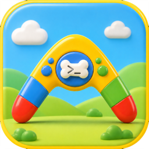

dogsh
A shell that follows you everywhere: local, cloud, mobile
A UX Experiment by @maceip
dogshA shell that follows you everywhere: local, cloud, mobile
A UX Experiment by @maceipStart a shell in the macOS app. Focus Chrome and it appears in the active tab; switch tabs and it moves with you. The Android build uses the same extension in Edge Canary.
cd app && npm start (or open the packaged
.app). It starts your login shell in a PTY, so
vim, htop, and full-screen TUIs work normally.
Build the extension (cd extension && npm run build),
then load extension/dist as an unpacked extension.
The active tab gets the terminal when Chrome takes focus.
Pack dogsh.crx, sideload into Edge Canary,
adb reverse the daemon port, set options to
ws://localhost:<port>, and open a page.
# quick path cd app && npm install && npm start cd ../extension && npm install && npm run build # chrome://extensions → Load unpacked → extension/dist # Edge Canary (Android) cd extension && npm run pack # → build/dogsh.crx
The target is instant follow: one shell should appear on whatever screen is in front of you — laptop, phone, browser, Raspberry Pi, cloud VM, or fridge — without starting another shell. Every endpoint uses the same WebSocket protocol; the Session Host keeps the process and decides who owns input.
Any endpoint running a dogsh client
~/.dogsh/state
Clients stay connected and keep warm terminal state. A focus change moves the input lease; there is no shell restart, terminal rebuild, or network reconnect during a same-host handoff.
Focus and visibility are level reports, not ownership claims. The gateway collapses browser noise into one update per 16 ms, drops duplicates, and allows only the current owner to write or resize.
Transfer is export → fence → import. The old host stops accepting input before the new generation takes over; clients follow the redirect and resync from a snapshot. This moves authority and terminal state, not a live macOS PTY process.
A lagging phone or remote screen cannot stall the others. It stops receiving deltas, gets a fresh snapshot after recovery, and is disconnected if it remains stuck; PTY high/low watermarks bound the host’s own output queue.
The macOS app and Chrome MV3 overlay work now; the Edge Canary Android
path is experimental. CI packages a debug
.app, extension dist/, and .crx.
adb reverse to the daemon.
The same-machine handoff works. The next problems are finding the current host and moving a live process between hosts.